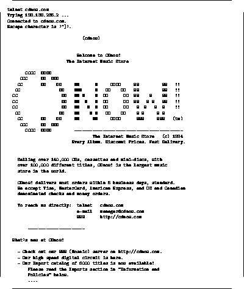

Telnet er navnet på Internettes protokoll for å ``logge seg inn'' på en maskin over nettet. Dette bruker man til to forskjellige typer ting:
I et stort lokalnett eller WAN basert
på TCP/IP er dette meget vanlig. Man bruker da Telnet for å knytte
seg opp mot en annen maskin i nettet for å gjøre interaktivt arbeide
på denne maskinen. Dette kan man også gjøre på kryss og tvers i
Internettet hvis man har aksess til andre maskiner i verden.
basert
på TCP/IP er dette meget vanlig. Man bruker da Telnet for å knytte
seg opp mot en annen maskin i nettet for å gjøre interaktivt arbeide
på denne maskinen. Dette kan man også gjøre på kryss og tvers i
Internettet hvis man har aksess til andre maskiner i verden.
Når medarbeidere i en organisasjon er ute og reiser, vil man f.eks. kunne bruke Telnet fra Internet aksess punkter ute i verden for å nå maskinene hjemme.

Minst like viktig som det å bruke Telnet til interaktivt arbeide over nettet, er muligheten til å bruke Telnet som en bæretjeneste for en annen tjeneste som kjører på maskinen i andre enden av tråden.
Det finnes mange eksempler på dette. Noen av tjenestene trenger man et brukernavn og passord for å bruke, mens andre er helt åpne. Se f.eks. figur 8 for eksempel på hvordan Telnet brukes for å komme i kontakt med en CD butikk i USA. Den samme butikken har også en World Wide Web inngang, demonstrert i figur 15.